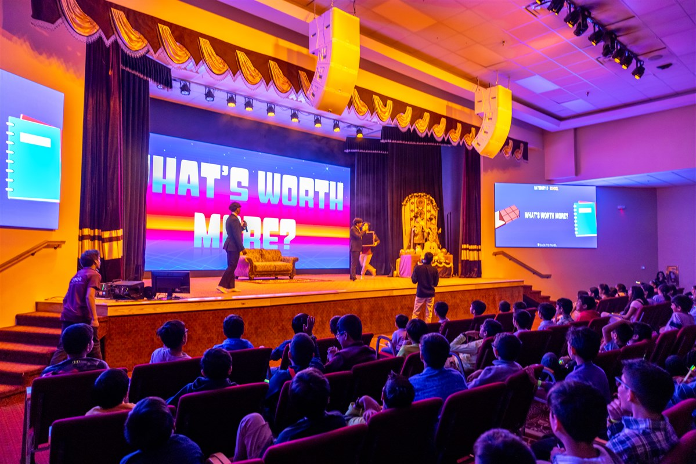

Competency Coverage
Check marks show which experiences connect to each Michigan Engineering Competency.
| Competency | AWS | ENGR 101 | Dallas Tech | Akshardham | KDC | Orientation | AppBreakdown |
|---|---|---|---|---|---|---|---|
| Communication | ✓ | ✓ | ✓ | ||||
| Creativity | ✓ | ✓ | |||||
| Empathy | ✓ | ✓ | ✓ | ✓ | |||
| Entrepreneurial Mindset | ✓ | ✓ | |||||
| Ethics | ✓ | ✓ | |||||
| Global/Cultural Awareness | ✓ | ||||||
| Grit/Resilience/Persistence | ✓ | ||||||
| Leadership | ✓ | ✓ | ✓ | ||||
| Lifelong Learning | ✓ | ✓ | |||||
| Risk Management | ✓ | ✓ | |||||
| Systems Thinking | ✓ | ✓ | ✓ | ||||
| Teamwork | ✓ | ✓ |
AWS Software Development Engineer Intern
Context: This summer I interned on the AWS Catalog team, which works on metadata, governance, and data access across services like AWS Glue Data Catalog, Lake Formation, and Redshift. My project was building a canary testing framework that constantly runs checks against more than 45 Glue, Lake Formation, and Catalog APIs across multiple AWS regions. The pipelines run the API calls, collect the results, and trigger CloudWatch alarms when something breaks, so the team can catch availability, latency, or functional problems before customers notice.
Engineering Competency Connections:
Systems Thinking
AWS services do not live on their own. A Lake Formation permission issue can show up as a Glue failure, and a problem in one region might not exist in another. I had to understand how these services depend on each other before I could decide what to test and where. I ended up designing region aware health checks because a single global "is it working" check would have hidden real problems.
Risk Management
The whole point of a canary is managing risk. I had to think about which failures would hurt customers the most, how fast we needed to know, and how to avoid alarms going off for no reason, since an alarm nobody trusts is basically useless. Balancing catching real issues against creating noise for on call engineers was one of the biggest tradeoffs I worked through.
Grit/Resilience/Persistence
The first few weeks were a lot. I was learning Glue, Lake Formation, Iceberg, and internal Amazon tooling all at once, and plenty of my first attempts did not work. I got through it by breaking the project into small pieces, asking my mentor good questions, and just not quitting on a bug until I understood why it was happening.
Lifelong Learning
Before the internship I had never worked with data lake technology at this scale. I prepped by putting together my own technical overview of the services before day one, and I kept learning the entire summer. It showed me that in industry the learning does not stop after school, it actually speeds up.
This internship taught me that some of the most important engineering work is the stuff nobody sees. If my framework does its job, customers will never know it exists, and that is exactly the point.
ENGR 101 Instructional Aide
Context: I'm an Instructional Aide for ENGR 101, Introduction to Computers and Programming, a freshman engineering course at the University of Michigan. I provide instructional support in MATLAB and C++ through office hours, helping students with homework, labs, and projects. My role is to help them debug code, explain concepts in ways that click, and guide them through the frustration of getting something wrong before they figure it out.
Engineering Competency Connections:
Communication
Explaining technical concepts to beginners forced me to think about how I communicate. Students come in stuck on different things. Some need the big picture first. Others want to trace through their code line by line. I had to learn to read where someone was at and adapt how I explained things. That meant dropping jargon, drawing things out, and sometimes breaking a problem into even smaller pieces than I thought was possible. Clear communication in engineering matters whether you're in a design review, writing documentation, or walking a client through a solution.
Empathy
A lot of students show up to office hours already frustrated, and some of them are convinced they are just not a coding person. Before I look at their code I try to figure out what they actually think is going on. We go through it. What did they expect? What's actually happening? What have they already tried? A lot of the time the bug is something simple, but the process of walking through it teaches them how to approach problems on their own. I also run into cases where I'm not sure what's wrong either. Then it's about thinking through it systematically, testing hypotheses, and knowing when to look things up or ask someone else. That's the same kind of problem solving I use in my own projects.
Lifelong Learning
To help students in MATLAB and C++, I need to understand the material deeply. That means staying on top of the coursework, remembering syntax and how the tools work, and being able to apply concepts across different types of problems. Sometimes a question about arrays, loops, or functions pushes me to dig into something I hadn't thought about in a while. Being an IA keeps my fundamentals sharp, and having to explain something out loud is the fastest way I have found to learn it for real.
Leadership
Even though I'm not the professor, I'm in a position where students look to me for guidance. That means setting a tone in office hours that's supportive but still pushes them to think. It means knowing when to let them struggle a bit and when to step in. It also means being reliable. If I say I'll be there, I'm there. If I say I'll follow up on something, I do. Small things, but they matter when you're trying to help people learn and grow.
Ethics
Part of being on course staff is helping with academic integrity. I've worked with the staff on comparing student submissions with code similarity tools, flagging patterns that look off, and putting together documentation for Honor Council review. It is not the fun part of the job, but it matters. It is not fair to the students who did the work themselves if copying goes unchecked, and it is not fair to the flagged student if the case is sloppy. So I try to be careful and stick to what the evidence actually shows.
Being an IA has made me a better communicator, a more patient problem solver, and more confident in my own technical skills. It's also reminded me how much it matters to have someone who can explain things when you're stuck. That's something I want to carry into whatever I do next.
Dallas Tech Software Engineering Intern
Context: At Dallas Tech I helped build ETL pipelines with Apache Beam to process financial data from outside APIs, and I built client facing dashboards in Python that pulled together data from tools like Salesforce, Stripe, and QuickBooks so city partners could see their transaction and budget data in real time.
Engineering Competency Connections:
Systems Thinking
Dashboards are only as good as the data feeding them. To build them I had to understand the whole path, from the external APIs, through the pipeline, into the databases, and finally onto the screen. If something looked wrong on a dashboard, the bug could be anywhere along that path, so I learned to think about the entire flow instead of just my piece.
Teamwork
I worked closely with DevOps and QA on CI/CD pipelines and testing. I learned that shipping software is a team sport. If I changed something without telling QA, it could break their tests, and if DevOps was blocked, nobody shipped. Clear updates and asking for help early made everything run smoother.
Ethics
This data belonged to city partners and was about real budgets and real money. A wrong number on a dashboard could lead to a bad decision. That is why I took testing seriously and wrote unit, integration, and end to end tests to make sure the data was accurate. Accuracy was not just a technical goal, it was a responsibility.
Creativity
Clients did not want raw tables. They wanted to understand their money at a glance. I had to get creative about how to combine data from several different platforms and present it in a way that was simple without hiding important details.
Dallas Tech was where I first saw how my code could directly affect real decisions, and it made me a lot more careful about getting things right.
BAPS Akshardham Software Engineering and Operations Intern
Context: At Akshardham, a large nonprofit campus, I built a warehouse management system from scratch using Python, Flask, and MySQL, and I helped redesign the recipe platform used by the food services team. The warehouse system moved inventory from a LIFO to a FIFO process and added real time monitoring dashboards. Retrieval latency dropped by 30% and storage utilization went up by 30%.
Engineering Competency Connections:
Entrepreneurial Mindset
Nobody handed me a spec. I had to look at how inventory was really being tracked, find where it was breaking down, and figure out what would actually create value for the organization. That meant thinking like a builder solving a real customer's problem, not just a student finishing an assignment.
Empathy
The people using this system were not engineers. If the tool was confusing, they would just go back to the old way. I had to understand their daily workflow and design around it so the system made their job easier instead of adding one more thing to deal with.
Systems Thinking
Changing from LIFO to FIFO sounds simple, but it affected how items were stored, how they were pulled, and how the dashboards reported what was in stock. I had to think about how one change would ripple across the whole operation before I touched the code.
This was the first time I built something real that people depended on every day, and it is the experience that made me want to build systems with real impact.
Kids Diwali Celebration: Leading a 500 Person Event

Context: As a BAPS Youth Leader I was asked to lead the Kids Diwali Celebration for more than 500 kids and families. The event had a lot of moving pieces: decorations, the stage program, registration, food, and making sure people actually flowed through the space without getting stuck.
Engineering Competency Connections:
Leadership
At first I tried to be involved in everything. I wanted to review the decorations, approve every part of the program, and weigh in on all the logistics. That quickly became unsustainable. I eventually realized that if I kept trying to control every detail, nothing important would move forward. I shifted to recruiting strong department heads for each area and focused on setting expectations, removing roadblocks, and checking in on progress instead of doing their work for them.
Communication
Keeping so many departments aligned forced me to communicate clearly and consistently. I set up regular check in meetings and a shared planning doc where each team could record updates, dependencies, and open questions. This cut down on last minute surprises, like two teams needing the same space at the same time. It also made it easier for people to speak up when something was not working, because they knew there was a regular forum for it.
Teamwork
The event only worked because every department trusted each other and understood how their piece fit into the whole. I spent time walking through the full timeline with the team so everyone could see when they were on center stage and when they were in support mode. During the event itself I shifted from task mode to support mode, making sure departments had what they needed and stepping in where gaps showed up.
Risk Management
For this year's KDC I'm planning the ground fountain fireworks show, and that is a different kind of planning. The walkway only fits four fountains side by side and there is no room on the grass, so I had to map out every row from front to back and think about what the audience sees first. Everything fires from a wireless controller split into four areas, which means one wrong cue or a bad layout is not just ugly, it can be unsafe. I've had to plan for the worst case first and the show second, which is a mindset I did not really have before.
By the end of the night the event ran smoothly and kids left excited about Diwali, which was the whole point. For me the bigger lesson was that leadership is less about being everywhere and more about building a team you trust, setting a clear direction, and then getting out of the way so people can do their work.
Michigan Orientation Leader
Context: As an Orientation Leader, I led groups of incoming students through their first days on campus and talked with students and families about academics and life at Michigan.
Engineering Competency Connections:
Global/Cultural Awareness
I met students and families from a lot of different backgrounds, including first generation students, international families, and people who had never been to Michigan before. Everyone came in with different expectations and worries. I learned not to assume that what felt normal to me was normal to everyone.
Communication
I had to explain the same things, like registration and campus resources, to a nervous freshman and then to a parent who had very different questions. Adjusting how I talked depending on who was in front of me was a skill I used constantly.
Empathy
I remember how overwhelming my first week felt. Being on the other side made me more patient and more willing to slow down when someone needed it.
Leadership
Leading a group of strangers meant setting a welcoming tone from the first minute, so people felt comfortable asking questions instead of pretending they knew everything.
Orientation taught me that making people feel welcome is a real skill, and it is just as important on an engineering team as it is on move in day.
AppBreakdown, Technical Consultant
Context: Through NOBE I worked as the technical consultant on AppBreakdown, a gamified, Duolingo style mobile app that teaches people how apps are actually built.
Engineering Competency Connections:
Entrepreneurial Mindset
We were not just building an app, we were building a product someone would choose to use. That meant thinking about who the users were, why they would keep coming back, and what would make it different from a YouTube tutorial.
Creativity
Turning software concepts into bite sized, game like lessons was a creative challenge. As the technical consultant, I had to break complicated ideas down into small steps that still felt fun and were not watered down.
Empathy
Our users were beginners. I had to remember what it felt like to not know what an API or a database was, which honestly connected a lot to what I see as an ENGR 101 IA. Looking back, I would push to test the app with a wider range of users earlier, so we were not just designing for people like us.
AppBreakdown showed me that a good technical idea is only half the work. The other half is understanding the people you are building for.